SpringMVC
1.SpringMVC入门
1.1.MVC模式
MVC全名是Model View Controller是模型(model) 视图(view) 控制器(controller)的缩写，是一种用于设计创建Web应用程序表现层的模式。- MVC中每个部分各司其职:
- Model (模型) ：通常指的就是数据模型，
JavaBean类。一般情况下用于封装数据 - View (视图) ：通常指的就是我们的
jsp/html。一般用于展示数据的 - Controller (控制器) ：用来接收用户的请求，整个流程的控制器。用来进行数据校验等。
- Model (模型) ：通常指的就是数据模型，
1.2.SpringMVC模式
- SpringMVC是一种基于Java的实现MVC设计模型的请求驱动类型的轻量级Web框架
- 属于Spring FrameWork的后续产品，已经融合在Spring Web Flow 里面
Spring框架提供了构建Web应用程序的全功能MVC模块。- 使用Spring可插入的MVC架构，从而在进行WEB开发时，可以选择
Spring的Spring MVC框架或其他MVC开发框架，如Struts2等
1.3.入门程序
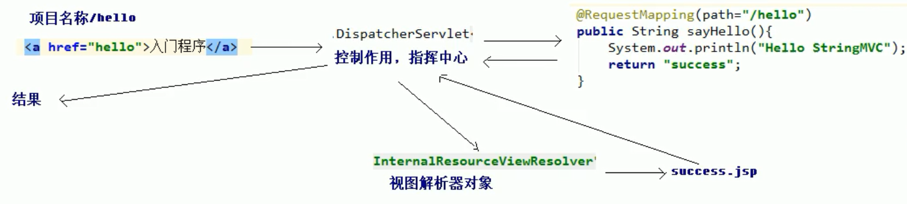
- 当启动
Tomcat服务器的时候，因为配置了load-on-startup标签，所以会创建DispatcherServlet对象，就会加载springmvc.xml配置文件 springmvc.xml开启了注解扫描，Spring容器就会创建HelloController对象- 打开浏览器，从
index.jsp发送请求，请求会先到达DispatcherServlet核心控制器，根据配置@RequestMapping注解找到执行的具体方法 - 根据执行方法的返回值，再根据配置的视图解析器，去指定的目录下查找指定名称的
JSP文件 Tomcat服务器渲染页面，做出响应
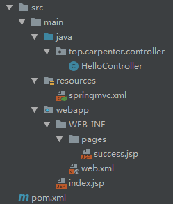
pom.xml
1 |
|
web.xml
1 | <!-- 配置中央调度器 拦截所有请求--> |
index.jsp
1 | <%@ page contentType="text/html;charset=UTF-8" language="java" %> |
success.jsp
1 | <%@ page contentType="text/html;charset=UTF-8" language="java" %> |
springmvc.xml
1 |
|
HelloController
1 | package top.carpenter.controller; |
1.4.组件方式执行流程

DispatcherServlet前端控制器- 用户请求到达前端控制器，它就相当于
mvc模式中的c，dispatcherservlet是整个流程控制的中心，由它调用其它组件处理用户的请求，dispatcherServlet的存在降低了组件之间的耦合性
- 用户请求到达前端控制器，它就相当于
HandlerMapping处理器映射器HandlerMapping负责根据用户请求找到Handler即处理器，SpringMVC提供了不同的映射器实现不同的映射方式，例如:配置文件方式，实现接口方式，注解方式等。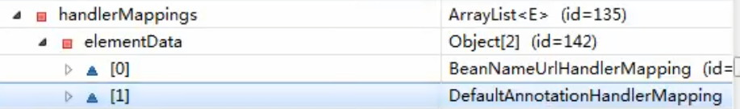
<mvc:default-servlet-handler/>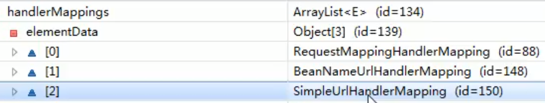
Handler处理器- 它就是我们开发中要编写的具体业务控制器。由
DispatcherServlet把用户请求转发到Handler，由Handler对具体的用户请求进行处理。
- 它就是我们开发中要编写的具体业务控制器。由
HandlAdapter处理器适配器- 通过
HandlerAdapter对处理器进行执行，这是适配器模式的应用，通过扩展适配器可以对更多类型的处理器进行执行- 表单数据类型校验/转换….
- 通过
View Resolver视图解析器View Resolver负责将处理结果生成View视图，View Resolver首先根据逻辑视图名解析成物理视图名
即具体的页面地址，再生成View视图对象，最后对View进行渲染将处理结果通过页面展示给用户- 所有的视图解析器都必须实现 ViewResolver 接口
- 可以选择一种视图解析器或混用多种视图解析器
- 每个视图解析器都实现了
Ordered接口并开放出一个order属性，可以通过order属性指定解析器的优先顺序，order越小优先级越高。 SpringMVC会按视图解析器顺序的优先顺序对逻辑视图名进行解析，直到解析成功并返回视图对象，否则将抛出 ServletException 异常
View视图SpringMVC框架提供了很多的View视图类型的支持，包括:jstlView、freemarkerView、pdfView
等，最常用的视图就是jsp- 一般情况下需要通过页面标签或页面模版技术将模型数据通过页面展示给用户，需要由程序员根据业务需求开发具体的页面
- 视图对象由视图解析器负责实例化。由于视图是无状态的，所以不会有线程安全的问题
1.5.xml/注解配置说明
<mvc:annotation-driven>- 在
SpringMVC的各个组件中，处理器映射器、处理器适配器、视图解析器称为SpringMVC的三大组件 - 使用
<mvc: annotation-driven>自动加载RequestMappingHandlerMapping(处理映射器)和RequestMappingHandlerAdapter(处理适配器)ExceptionHandlerExceptionResolver，可用在springMVC.xml配置文件中使用<mvc:annotation-driven>替代注解处理器和适配器的配置。
- 在
支持使用
ConversionService实例对表单参数进行类型转换- 支持使用
@NumberFormat、@DateTimeFormat注解完成数据类型的格式化 - 支持使用
@Valid注解对JavaBean实例进行JSR 303验证 - 支持使用
@RequestBody和@ResponseBody注解
- 支持使用
@RequestMaping用于建立请求URL和处理请求方法之间的对应关系
属性
value/path:用于指定请求的URLmethod:用于指定请求的方式params:用于限制请求的参数，即必须包含的参数。它支持简单的表达式，要求url请求参数的key和value必须和此参数配置的一模一样【不常用】headers:用于限制请求消息头，即必须包含的消息头【不常用】
1
2
3
4
5(path = "/hello",params = {"name=yyx"}, method = RequestMethod.GET)
public String sayHello(String name){
System.out.println("Hello MVC"+ name);
return "success";
}位置
- 类名——需要以
/开头：第一级的访问目录 - 方法名：第二级的访问目录
- 类名——需要以
2.SpringMVC请求参数的绑定
- 不使用@RequestParam注解直接进行对象属性赋值（不推荐使用，容易和@ReuqestBody混淆）
2.1绑定的机制
表单中请求参数都是基于
key=value的SpringMVC绑定请求参数的过程是通过表单提交请求参数，作为控制器中方法参数进行绑定的
1
<a href="yyx/hello?name=yyx">入门程序</a>
1
2
3
4
5(path = "/hello")
public String sayHello(String name){
System.out.println("Hello MVC"+ name);
return "success";
}
2.2.支持的数据类型
SpringMVC绑定请求参数是自动实现的，但是要想使用，必须遵循使用要求
2.2.1.基本类型参数和String类型
- 参数名称必须和控制器中方法的形参名称保持一致【严格区分大小写】
2.2.2.pojo类型参数：包括实体类，以及关联的实体类
- 表单中参数名称和
pojo类的属性名称保持一致。并且控制器方法的参数类型是pojo类型 - 如果一个
JavaBean类中包含其他的引用类型， 那么表单的name属性需要编写成:对象.属性例如：address.name
1 | <form action="yyx/accountSave" method="post"> |
1 | public class User implements Serializable { |
1 | (path="/accountSave") |
2.2.3.数组，List结构和Map结构的集合
- 在表单中请求参数名称要和
pojo中集合属性名称相同- 给List集合中的元素赋值，使用下标
- 给Map集合中的元素赋值，使用键值对
1 | <form action="yyx/accountSave" method="post"> |
1 | public class Account implements Serializable { |
1 | (path="/accountSave") |
2.2.4 数据绑定流程
Spring MVC主框架将ServletRequest对象及目标方法的入参实例传递给WebDataBinderFactory实例，以创建DataBinder实例对象DataBinder调用装配在Spring MVC下文中的ConversionService组件进行数据类型转换、数据格式化工作。将 Servlet 中的请求信息填充到入参对象中- 调用
Validator组件对已经绑定了请求消息的入参对象进行数据合法性校验，并最终生成数据绑定结果BindingData对象 Spring MVC抽取BindingResult中的入参对象和校验错误对象，将它们赋给处理方法的响应入参
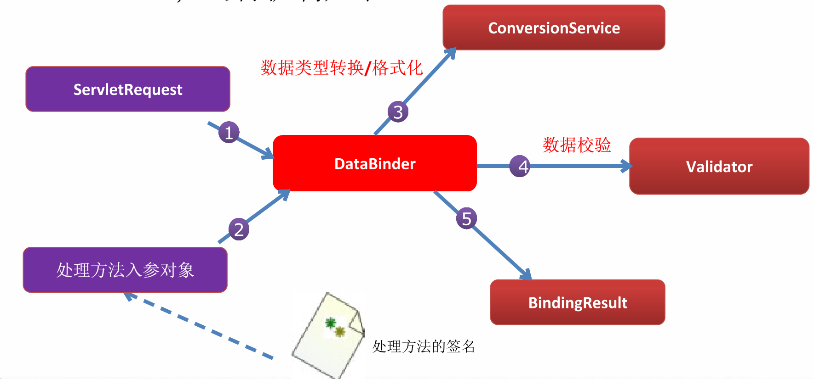
数据绑定的核心部件是 DataBinder
2.2.5.自定义类型转换器
ConversionService是 Spring 类型转换体系的核心接口可以利用
ConversionServiceFactoryBean在Spring的IOC容器中定义一个ConversionService，Spring将自动识别出 IOC 容器中的ConversionService，并在 Bean 属性配置及 Spring MVC 处理方法入参绑定等场合使用它进行数据的转换可通过
ConversionServiceFactoryBean的converters属性注册自定义的类型转换器<mvc:annotation-driven conversion-service= "conversionService"/>会将自定义的ConversionService注册到Spring MVC的上下文中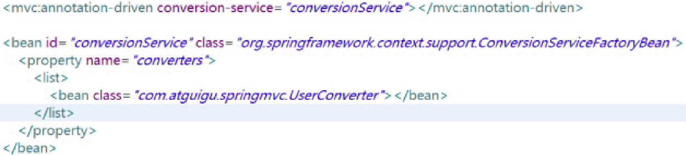
Spring 定义了 3 种类型的转换器接口，实现任意一个转换 器接口都可以作为自定义转换器注册到 ConversionServiceFactroyBean 中
- Converter<S,T>：将 S 类型对象转为 T 类型对象
- ConverterFactory：将相同系列多个 “同质” Converter 封装在一 起。如果希望将一种类型的对象转换为另一种类型及其子类的对 象（例如将 String 转换为 Number 及 Number 子类 （Integer、Long、Double 等）对象）可使用该转换器工厂类
- GenericConverter：会根据源类对象及目标类对象所在的宿主类 中的上下文信息进行类型转换
实例
表单提交的任何数据类型全部都是字符串类型，但是后台定义Integer类型，数据也可以封装上，说明Spring框架内部会默认进行数据类型转换
如果想自定义数据类型转换，可以实现Converter的接口
问题引入
1 | <form action="yyx/saveUser" method="post"> |
1 | public class User implements Serializable { |
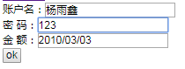
1 | //输入 xxxx/xx/xx成功封装 |
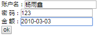
1 | //输入 xxxx-xx-xx封装失败 |
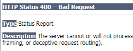
定义一个类实现
Converter接口，实现自定义的转换器1
2
3
4
5
6
7
8
9
10
11
12
13
14
15
16
17
18
19
20
21
22
23
24
25package top.carpenter.utils;
import org.springframework.core.convert.converter.Converter;
import org.springframework.util.StringUtils;
import java.text.DateFormat;
import java.text.ParseException;
import java.text.SimpleDateFormat;
import java.util.Date;
public class StringToDateConverter implements Converter<String, Date> {
// 实现其唯一抽象方法
public Date convert(String str) {
DateFormat formate = null;
Date date = null;
try {
if (StringUtils.isEmpty(str))
throw new NullPointerException("请输入日期");
formate = new SimpleDateFormat("yyyy-MM-dd");
date = formate.parse(str);
} catch (ParseException e) {
e.printStackTrace();
}
return date;
}
}在
Spring配置文件中配置类型转换器Spring配置类型转换器的机制是，将自定义的转换器注册到类型转换服务中去。
1
2
3
4
5
6
7
8
9<!-- 在Spring配置文件中配置类型转换器工厂-->
<bean id ="converterService" class="org.springframework.context.support.ConversionServiceFactoryBean">
<!-- 使用工厂类的set注入一个新的类型转换器（自定义的）-->
<property name="converters">
<set>
<bean class="top.carpenter.utils.StringToDateConverter"/>
</set>
</property>
</bean>在
annotation-driven标签中引用配置的类型转换服务1
<mvc:annotation-driven conversion-service="converterService"/>
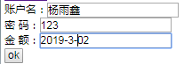
1 | User{uname='杨雨鑫', age=123, date=Sat Mar 02 00:00:00 CST 2019} |
2.2.6数据格式化
Spring在格式化模块中定义了一个实现ConversionService接口的FormattingConversionService实现类，该实现类扩展了GenericConversionService，因此它既具有类型转换的功能，又具有格式化的功能FormattingConversionService拥有一个FormattingConversionServiceFactroyBean工厂类， 后者用于在 Spring 上下文中构造前者FormattingConversionServiceFactroyBean 内部已经注册了
- NumberFormatAnnotationFormatterFactroy：支持对数字类型的属性 使用 @NumberFormat 注解
- JodaDateTimeFormatAnnotationFormatterFactroy：支持对日期类型 的属性使用 @DateTimeFormat 注解
装配了
FormattingConversionServiceFactroyBean后，就可以在Spring MVC入参绑定及模型数据输出时使用注解驱动了。<mvc:annotation-driven/>默认创建的ConversionService实例即为FormattingConversionServiceFactroyBean日期格式化
@DateTimeFormat注解可对java.util.Datejava.util.Calendarjava.long.Long时间- 类型进行标注：
pattern属性：类型为字符串。指定解析/格式化字段数据的模式， 如：yyyy-MM-dd hh:mm:ss
数值格式化
@NumberFormat可对类似数字类型的属性进行标注
2.2.7 JSR 303
JSR 303 通过在 Bean 属性上标注类似于 @NotNull、@Max 等标准的注解指定校验规则，并通过标准的验证接口对 Bean 进行验证
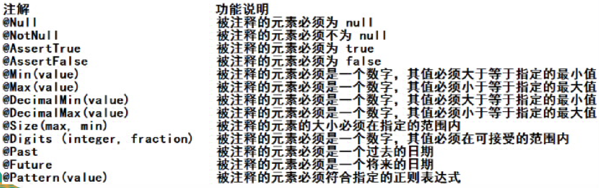
Hibernate Validator 是 JSR 303 的一个参考实现，除支持 所有标准的校验注解外，它还支持以下的扩展注解
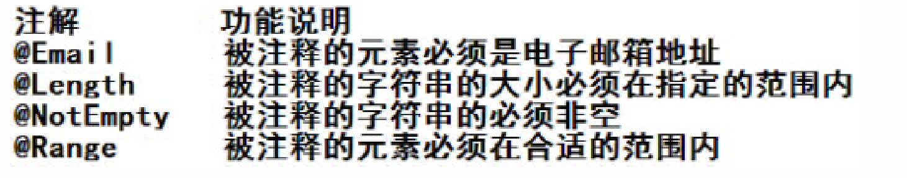
Spring 4.0 拥有自己独立的数据校验框架，同时支持 JSR 303 标准的校验框架。
Spring 在进行数据绑定时，可同时调用校验框架完成数据校验工作。在 Spring MVC 中，可直接通过注解驱动的方式进行数据校验
Spring 的 LocalValidatorFactroyBean 既实现了 Spring 的 Validator 接口，也实现了 JSR 303 的 Validator 接口。只要在 Spring 容器中定义了一个 LocalValidatorFactoryBean，即可将其注入到需要数据校验的 Bean 中。
<mvc:annotation-driven/>会默认装配好一个 LocalValidatorFactoryBean，通过在处理方法的入参上标 注 @valid 注解即可让 Spring MVC 在完成数据绑定后执行 数据校验的工作校验结果保存到随后的入参中，这个保存校验结果的入参必须是 BindingResult 或 Errors 类型，这两个类都位于 org.springframework.validation 包中
Spring 本身并没有提供 JSR303 的实现，所以必须将 JSR303 的实现者的 jar 包放到类路径下。
1
2
3
4
5
6
7
8
9
10
11
12
13(value="/emp", method=RequestMethod.POST)
public String save(@Valid Employee employee, BindingResult result, Map<String, Object> mapl){
if(result.getErrorCount() > 0){
System.out.println("出错了!");
for(FieldError error : result. getFieldErrors()){
System.out.println(error.getField() + ":" + error.getDefaultMessage());
}
//若验证出错，则转向定制的页面
return " input";
}
employeeDao.save( employee);
return "redirect:/emps";
}需校验的 Bean 对象和其绑定结果对象或错误对象时成对出现的，之间不允许声明其他的入参
Errors 接口提供了获取错误信息的方法
* getErrorCount() * getFieldErrors(String field)BindingResult 扩展了 Errors 接口
2.3.解决中文乱码问题
SpringMVC可以配置中文乱码web.xml
1 | <!-- 配置中文乱码过滤器--> |
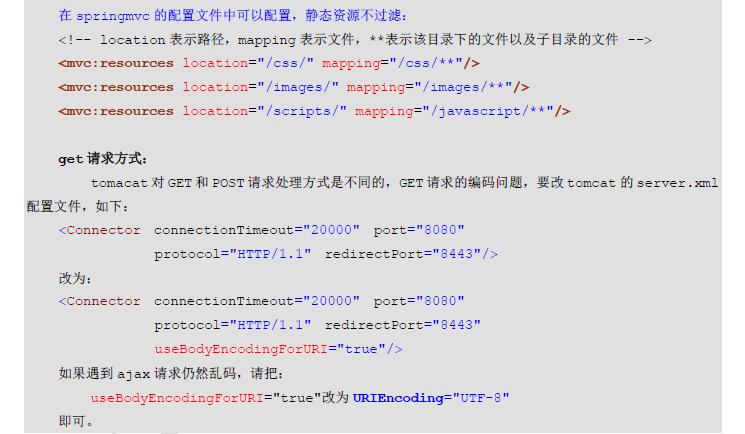
2.4.使用ServletAPI对象作为方法参数[重要]
SpringMVC支持使用原始ServletAPI对象作为控制器方法的参数。支持原始ServletAPI对象有:
HttpServletRequestHttpServletResponseHttpSessionjava.security.PrincipalLocaleInputStreamOutputStreamReaderWriter
我们可以把上述对象，直接写在控制的方法参数中使用
1
2
3
4
5
6
7(path="/saveUser")
public String test(User user, HttpServletRequest request)
{
System.out.println(user);
System.out.println(request.getSession());
return "success";
}
原文作者: 掘金木匠
原文链接: http://goldcarpenter.github.io/2019/11/05/SpringMVC_Part1/
版权声明: 转载请注明出处(必须保留作者署名及链接)